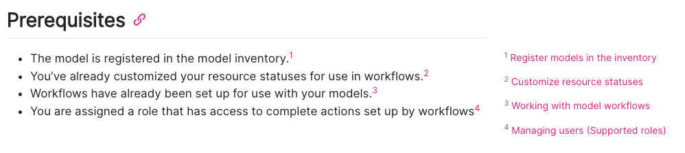
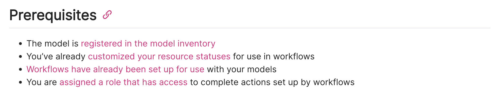

Conventions
A message can only make an impact when it is received, so presentation is (almost) everything.
Comprehensive assistance
Conveying knowledge and empowering users starts in the product interface. While external documentation can be helpful for supporting advanced functionality, users should not be lost on the basics without further reading.
- Make it interactive. Embedded user tutorials should exist whenever possible, and be intuitive and not obstructive.
- Show only what’s necessary when necessary. Progressive disclosure1 can help guide workflows as well as minimize visual clutter.
1 Wikipedia: Progressive disclosure
American English
While the ValidMind community spans far and wide, its heart finds its home in Palo Alto, California. When writing for ValidMind, keep things consistent by using American English2 spelling and grammar conventions.
2 US Department of State: American English
| Correct | Incorrect |
|---|---|
| At the center of this page, you will see the elements organized from most recent to least recent by default. | At the centre of this page, you will see the elements organised from most recent to least recent by default. |
Titles
- Task titles should always start with a verb and nouns should be in the plural if they describe an object acted on.
- For tasks that have child topic tasks, the starting verb should always be a gerund (“-ing”).
- Reference titles should include only the name of the content described unless it emcompasses a broader range of topics, in which case the title should end in “reference”.
| Correct | Incorrect |
|---|---|
| Register models in the inventory | Inventory model registration |
| Working with the model inventory | Use the model inventory |
| Developer reference | Articles for developers |
Formatting
Sentence case
In general, follow sentence-style capitalization3 to minimize the confusion of when to capitalize and when not to capitalize.
3 Microsoft: Capitalization
- Exceptions include referencing specific elements in the user interface (UI) that have their own casing to ensure that documentation matches the user experience, or when generating titles of publications such as blog posts.
- For UI elements that are in all caps, use the markdown smallcaps class to display these elements.
| Correct | Incorrect |
|---|---|
| Get started with ValidMind | Get Started with ValidMind |
| In the left sidebar, click Model Inventory. | In the left sidebar, click model inventory. |
| Honor the Human with ValidMind | Honor the human with ValidMind |
On the landing page of your model, locate the [model status]{.smallcaps} section: |
On the landing page of your model, locate the MODEL STATUS section: |
Headings
- Make them imperative! Individual task headings are a call to action. Gerunds (“-ing”) are acceptable when introducing a set of instructions with individual tasks.
- Avoid numbered headings. Most headers do not require numbering, as order can be discerned from context. Numbering headers can make it difficult to shift information around when information changes.
- Don’t use terminal punctuation. While headings should be in sentence case, they are not sentences.
| Correct | Incorrect |
|---|---|
| Login to ValidMind | 1. Logging into ValidMind. |
Responsive columns
To make sure our docs site works well on mobile, we use Tachyons CSS with flexbox. Quarto’s default support for CSS Grid is not responsive and should not be used.
Enable Tachyons CSS in the front matter with:
filters:
- tachyonsCorrect:
:::: {.flex .flex-wrap .justify-around}
::: {.w-50-ns}
Column 1, 50% wide
:::
::: {.w-50-ns}
Column 2, 50% wide
:::
::::Incorrect:
::: {.grid}
::: {.g-col-6}
Column 1, 50% wide
:::
::: {.g-col-6}
Column 2, 50% wide
:::
:::Margin footnotes
Keep hyperlinks in instructional text minimal — too many links can misdirect the user from the task at hand. This also solves the issue of links with nebulous descriptions that do not match article titles, or links whose destinations are not clear to the user such as “Read more.”
When possible — such as any time instructions are not single-sourced — instead of multiple inline links, make use of Quarto’s footnote functionality.4
Other than in single-sourced files, number all footnotes and place the footnotes at the very end of the page:
<!-- IN THE BODY OF YOUR CONTENT --> - The model is registered in the model inventory.[^1] - You've already customized your resource statuses for use in workflows.[^2] - Workflows have already been set up for use with your models.[^3] - You are assigned a role that has access to complete actions set up by workflows.[^4] <!-- AT THE END OF YOUR .QMD PAGE --> <!-- FOOTNOTES --> [^1]: [Register models in the inventory](/guide/model-inventory/register-models-in-inventory.qmd) [^2]: [Customize resource statuses](customize-resource-statuses.qmd) [^3]: [Working with model workflows](set-up-model-workflows.qmd) [^4]: [Managing users (Supported roles)](/guide/configuration/managing-users.qmd#supported-roles)
4 Quarto: Footnotes
Footnotes will automatically appear in the correct location in the margin.
| Correct | Incorrect |
|---|---|
|  |  |
Emphasis
Use emphatic styling sparingly, in order not to overwhelm the reader with visual distractions.
- Bolding — Some light bolding can be helpful to draw attention to core concepts. Bolding is also used to highlight UI elements that the user can interact with, such as links or buttons.
- Italics — Italics should not be used for emphasis, only for first uses of terms on the page to set the stage.
- Quotation marks — Quotation marks should generally only be employed for quoting speech.
| Correct | Incorrect |
|---|---|
| At ValidMind, we value transparency and accessibility — we aim to speak simply and effectively. (e.g. Highlighting the important concept within a sentence.) | At ValidMind, we value transparency and accessibility — we aim to speak simply and effectively. (e.g. Highlighting the entire sentence.) |
| In the ValidMind Platform UI, click Model Inventory on the left sidebar. | In the ValidMind Platform UI, click “Model Inventory” on the left sidebar. |
| Uncertainty can be summed up as the difference between reality and the outputs from the model selected to approximate reality. | “Uncertainty” can be summed up as the difference between reality and the outputs from the model selected to approximate reality. |
| “ValidMind is the only platform today that is purpose-built for model risk management professionals in the banking industry,” Jacobi says. | At ValidMind, we value “transparency and accessibility” — we aim to speak simply and effectively. |
Callouts
We use two types of callouts5 to call attention to supplementary information or issue warnings:
5 Quarto: Callout Blocks
.callout-important
For warnings and caveats. Warnings, important information, and cautions should follow this format.
| Correct | Incorrect |
|---|---|
::: {.callout title="Example note or tip"} |
::: {.callout-note title="Incorrect note"} |
::: {.callout-important title="Example warning, important, or caution"} |
::: {.callout-warning title="Incorrect warning"} |
Content types
Filenames
Filenames should generally match the title of the article6 or concisely summarize the content, and be descriptive but not overly lengthy.
6 Titles
- Filenames for concepts should generally only be made up of nouns and end in
-overviewif they introduce a product area. - Do not include extraneous keywords.
- A good filename makes the contents obvious!
| Correct | Incorrect |
|---|---|
style-guide.qmd |
style-guide-technical-writing.qmd |
example-model-workflow.png |
customize-workflow-mrm-governance.png |
model-documentation-overview.qmd |
automated-testing-and-documentation.qmd |
model-lifecycle.gif |
img4.gif |
Code
- Format code in its own code block.7
- Declare the code language within the pre-formatted block to properly trigger syntax highlighting.
7 Quarto: Source Code
8 Jupyter Notebooks: Code Cells
Within a Jupyter Notebook, simply use a code cell8 rather than a markdown cell.
Correct:
%pip install -q validmind
Using Python, call
%pip install -q validmind.Parameters, values, and files
Use backticks to enclose keyboard commands, parameters, field values, and file names/extensions.
| Correct | Incorrect |
|---|---|
Learn how to store project identifier credentials in a .env file instead of using inline credentials. |
Learn how to store project identifier credentials in a “.env” file instead of using inline credentials. |
For example, the classifier_full_suite test suite runs tests from the tabular_dataset and classifier test suites to fully document the data and model sections for binary classification model use cases. |
For example, the “classifier_full_suite” test suite runs tests from the “tabular_dataset” and “classifier” test suites to fully document the data and model sections for binary classification model use cases. |
Under When these conditions are met, you are able to set both AND and OR conditions. |
Under When these conditions are met, you are able to set both “AND” and “OR” conditions. |
Mathematics
- Mathematical formulas should be rendered using LaTeX formatting.9
- On our WordPress blog posts, this is taken care of by the WP Quick LaTeX plugin.10
9 Quarto: LaTeX Equations
10 WordPress: WP QuickLaTeX
| Correct | Incorrect |
|---|---|
| \(likes \sim Binomial(n_{feedbacks},p_{like})\) | $likes \sim Binomial(n_{feedbacks},p_{like})$ |
Proper nouns
In the context of model risk management, proper nouns include specific models, laws, or regulations, such as “Basel IV” or “SR 11-7.” These refer to specific frameworks or guidelines and you spell them with initial capital letters or exactly as indicated by official sources.
- Terms that are not proper nouns include general concepts such as “model validation,” “stress testing,” “risk assessment,” and “backtesting.”
- These are common terms in the field and are not capitalized unless starting a sentence.
| Correct | Incorrect |
|---|---|
| SS1/23 – Model risk management principles for banks | Model Validation |
| validation report | basel 4 |
| machine learning | Financial Services industry |
Product names
Within our documentation (https://docs.validmind.ai/), you are able to reference constants such as the ValidMind Developer Framework and ValidMind Platform UI via variables.11
11 Quarto: Variables
- Use the variables shown on the table below instead of writing out the phrases to enable consistency between guides everywhere except for image alt text or Mermaid charts.12
- If product names need to be updated, simply amend the
_variables.ymlfile13 to see changes reflected throughout all guides. - Please note that variables will not work within any of the Jupyter Notebook code samples14 as these are technically standalone files.
| Product Name | Variable Key | Description |
|---|---|---|
ValidMind AI risk platform |
{{< var validmind.product >}} |
Risk platform with a developer framework for documenting and testing models, alongside a platform UI hosting cloud-based tools, APIs, databases, and validation engines. |
ValidMind Developer Framework |
{{< var validmind.developer >}} |
Open-source suite of of tools that connects to the platform UI. |
ValidMind Platform UI |
{{< var validmind.platform >}} |
Hosted multi-tenant architecture that includes a cloud-based web interface. |
developer framework |
{{< var vm.developer >}} |
Short form of ValidMind Developer Framework. |
platform UI |
{{< var vm.platform >}} |
Short form of ValidMind Platform UI. |
https://app.prod.validmind.ai |
{{< var url.us1 >}} |
One of the URLs of the ValidMind Platform UI. |